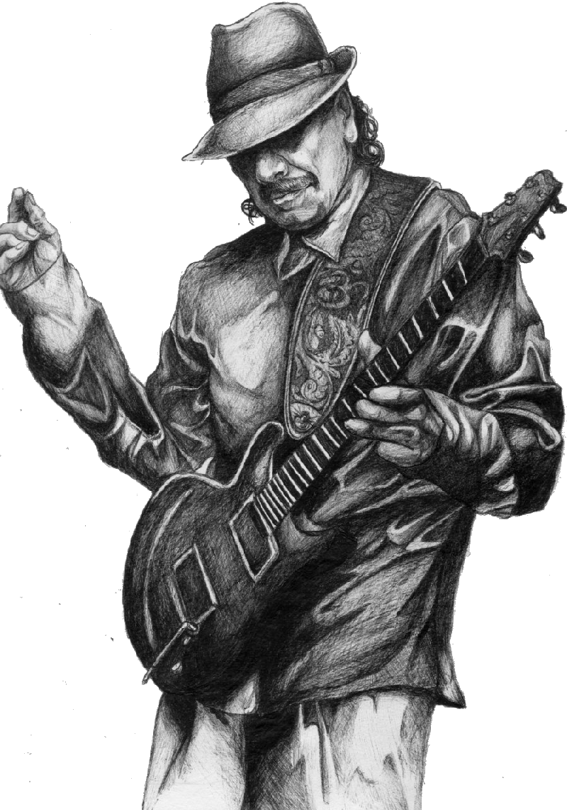

About Me
Hi, I’m Gabriel
I'm a Guitarist, TXTER, and Designer
I enjoy guitar and playing as a percussionist with the Youth Orchestra of Los Angeles. I also love creating websites, promotional videos, and music of my own. My passion is to help solve problems in our communities through technology and entrepreneurship. My personal goal is to create change in my community of Los Angeles and lead the future generation. I truly am inspired by those around me and enjoy learning new perspectives and build off other people's skills to create projects close to my heart.
I enjoy creating different projects that align with my hobbies like music and coding. I do covers of my most favorite songs that are tied into the latina genre. My Oaxacan Culture is very important to me because I get to experience traditions such as danza and music.
In Los Angeles, the community of Oaxaca is vast and is all over the city. When I'm by myself I practice guitar or with my snare drum. I enjoy telling stories and helping others create their own ways to display theirs.
If you want to collaborate on a project or if you just simply want to network contact me.
If you want me to design a website for you contact me. I am familiar with programs like Figma to design wireframes and logos. I also have experience with using Wix for websites.